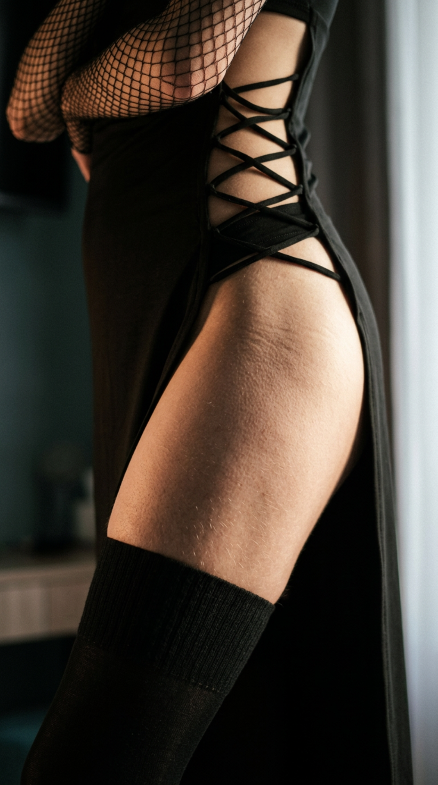

TELEGRAM
Пространство формируется.
Слышать, как тот, кто рядом, дышит чаще — единственная музыка, под которую мы готовы терять себя.
ДальшеХм… ты здесь.
Это обо мне… или о тебе?
Образ / движение / детали
Иногда движение почти незаметно.

Явить себя и быть увиденной — или остаться тенью.
Мой выбор. Только мой.
Всецело. Безраздельно.
В нём разница меж той, на кого смотрят, и той, кто открывает: что показать, как близко, под каким углом.
Ведь взгляд — не право. Это приглашение. И может быть отозвано в любой момент.
Темнота мне друг и спутник. Но она не прячет, а позволяет видеть в сумраке лишь то, что я решила подсветить.
И право мне самой определить, когда себя заметить дать, когда укрыть в тени.
И роскошь мне — не блеск и не караты. Дистанция, граница, дверь, засов.
Не потому что я боюсь, страшусь или не знаю курса.
Пространство формируется.
Пространство формируется.
Пространство формируется.